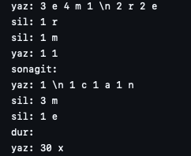
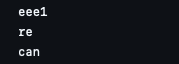

Systems Programming Project
 Project Overview
In this project, utilizing the Libfdr library, an input file entered via the terminal is parsed to read commands such as "yaz" (write), "sil" (delete), "sonagit" (output last), and "dur" (terminate). Based on the command provided via the terminal, a corresponding output file is generated in the code. The commands dictate actions to be performed, and their results are written to this output file.
Runtime Instructions
To run this project, first enter the Libfdr file and run the makefile there, then run the makefile in the main folder, and then run the code named "odev.c" in the src folder, and give the names of the input and output folders. "bin/odev giris.dat cikis.dat".
Language: C
Operating System: Ubuntu, Linux.